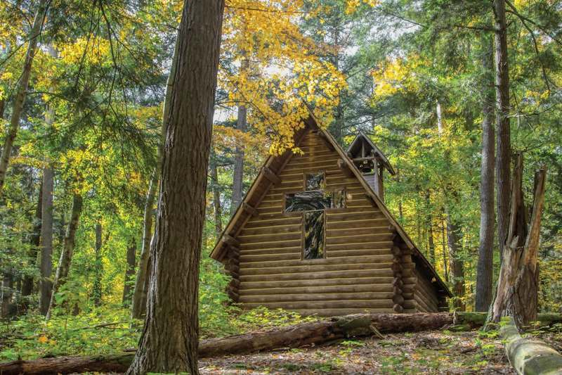

Grayling, Michigan is a charming small town in the heart of Northern Michigan, known as the “Canoe Capital of the World” thanks to the beautiful Au Sable River that flows through it. It’s a perfect destination for outdoor lovers, offering world-class canoeing, kayaking, and fishing, as well as easy access to hiking trails, campgrounds, and the serene atmosphere of Hartwick Pines State Park. Visitors can enjoy the slower pace of a classic Up North getaway, explore unique local shops and eateries, and experience the famous Au Sable River Canoe Marathon. Whether you’re looking for adventure on the water, peaceful nature escapes, or a friendly small-town atmosphere, Grayling makes for a refreshing and memorable stop.
